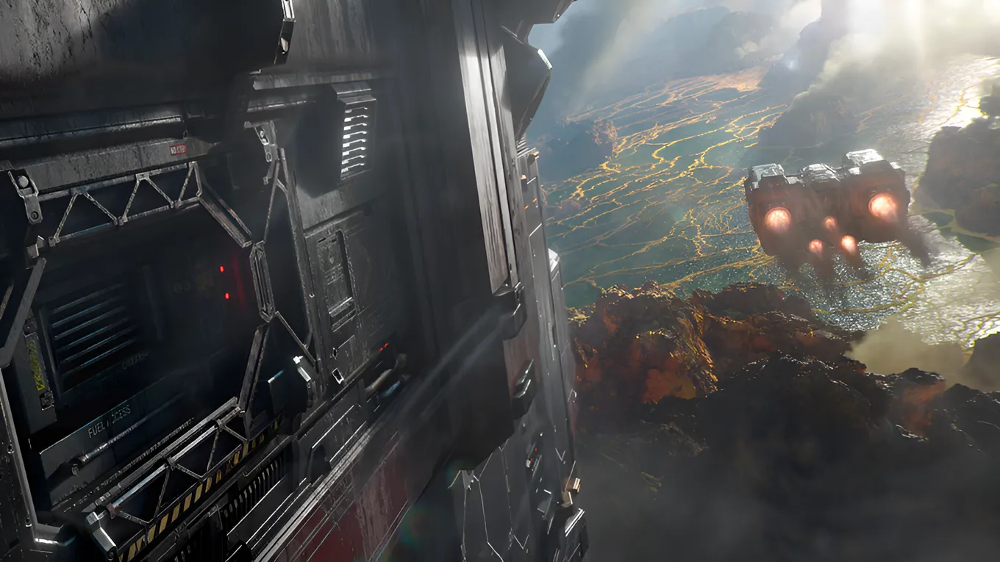
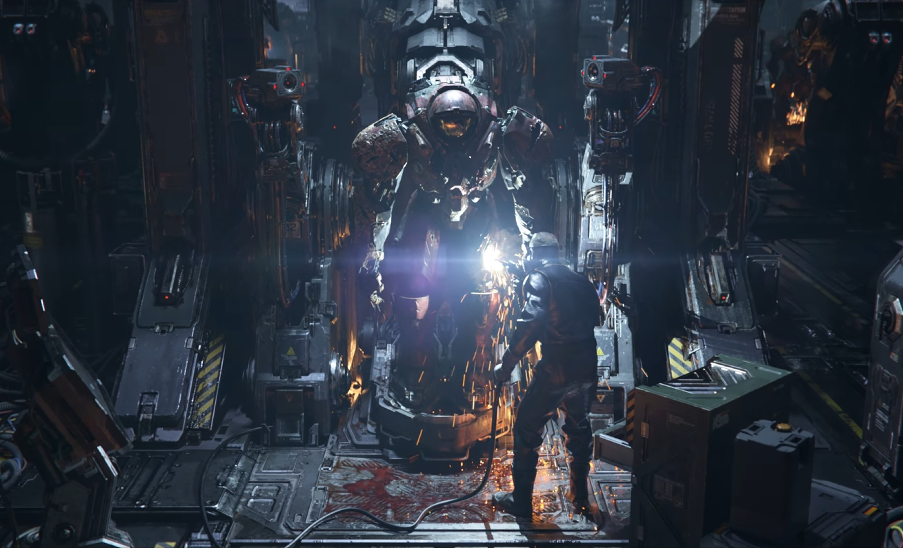
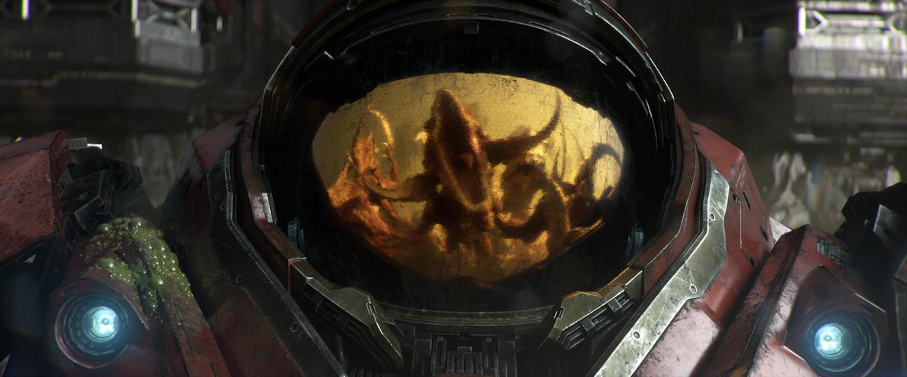
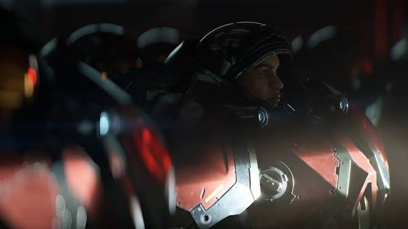
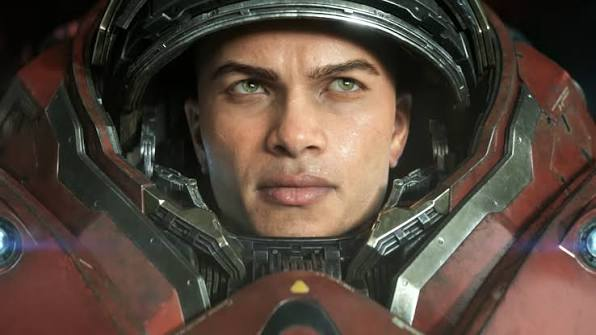

Анонсированная компания Blizzard игра по вселенной StarCraft представляет собой амбициозное ответвление от традиционного жанра стратегий в реальном времени, совершающее переход к формату мрачного шутера с открытым миром. Действие этой масштабной научно-фантастической игры разворачивается спустя несколько десятилетий после драматических событий трилогии StarCraft II, когда сектор Копрулу снова сталкивается с нарастающей угрозой возобновившейся войны и возвращения Зергов. Вместо привычного управления армиями с высоты птичьего полёта игрок погружается во вселенную от первого лица, принимая на себя роль бойца на самой передовой — прямо «на земле» среди пехоты и военной техники. Повествование предлагает законченную сюжетную историю, акцентируя внимание на выживании, исследовании опасных планет и исследовании жестокого мира, где баланс сил между Терранами, Зергами и Протоссами вновь оказывается под угрозой полного краха.




